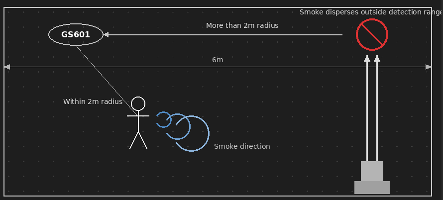
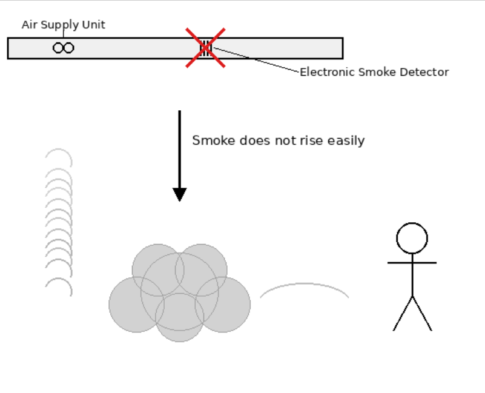
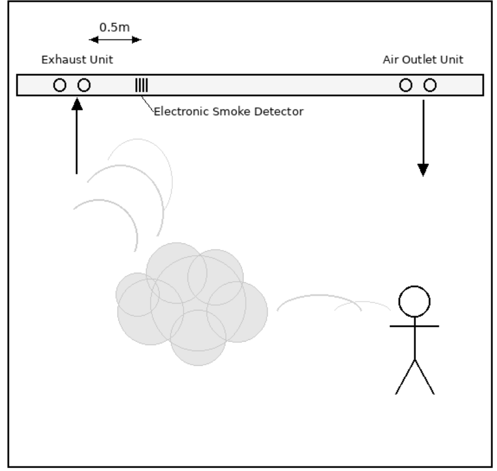
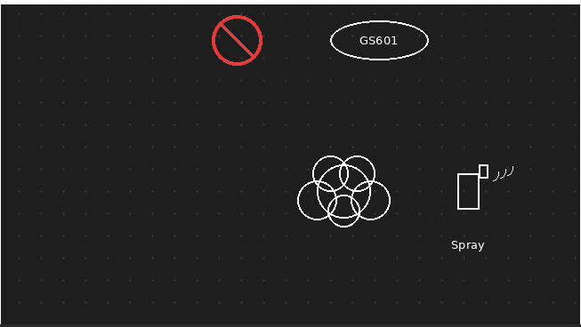
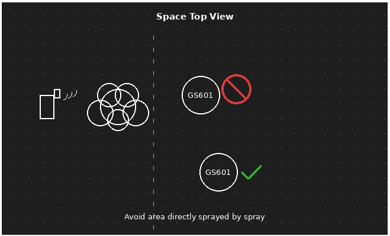
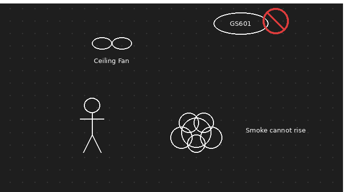
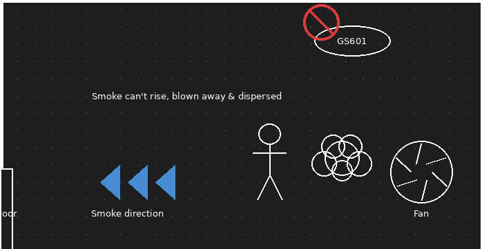
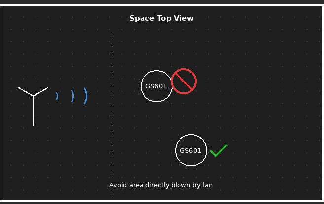
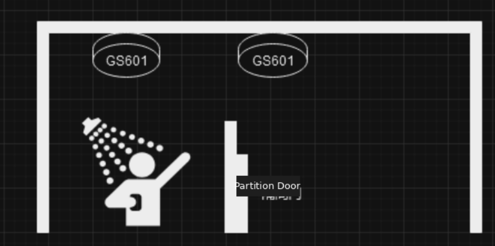

How to Plan the Installation of GS601 to Ensure Vaping Measurement Accuracy

How to Plan the Installation of GS601 to Ensure Vaping Measurement Accuracy
| Version | Update Time | Description | Author |
| 1.0 | Jun. 13, 2026 | Initial version | Luis |
Description
The GS601 is primarily used in smart campus environments—such as restrooms, classrooms, dormitories, and shower rooms—as well as in smart city settings, including public restrooms, hotels, shopping malls, and other non-smoking areas. This product mainly detects electronic cigarettes and traditional cigarettes by monitoring PM1.0 particles. When smoking is detected, GS601 emits an audible alarm to warn violators and simultaneously sends alarm packets to help school administrators or business owners monitor the frequency, timing, and personnel involved in smoking violations.
The device adopts a ceiling-mounted installation method. The recommended installation height ranges from 2.4 meters to 3 meters, and the detection area covers a horizontal radius of 2 meters. GS601 can quickly identify both electronic cigarettes and traditional cigarettes, effectively resisting interference from general substances and most environmental factors, while also being capable of countering certain masking behaviors.
Deployment Principles
Detection accuracy for Vaping and Smoking
Vaping: 97%;
Smoking: 99%
The GS601 operates within a temperature range of -5°C to 45°C and a humidity range of 0% to 95%. The mainboard is not coated with conformal paint, so installation in areas with persistent moisture accumulation should be avoided.
The device must be ceiling-mounted at a height of below 3 meters, covering the space according to a 2-meter radius detection range.
If the coverage is insufficient—for example, installing only one device in a 6m x 4m room—detection performance may be compromised, even if smoking occurs within the device’s detection range.

The installation location should avoid areas near air conditioning outlets or other air supply devices (at least 30 cm away from the outlet). It is recommended to install the device within 70 cm of an exhaust fan, preferably positioned between the air outlet and the exhaust fan.


Please do not install the device in areas where aerosol sprays containing emulsifiers, esters, or similar substances are directly used, such as zones where air fresheners, hair sprays, or automatic essential oil diffusers are sprayed directly.


Do not install the device directly in areas exposed to direct airflow from heaters or fans.



Do not use burning mosquito coils, as they may trigger false alarms.
If installed in restroom environments, morning cleaning activities may stir up dust and trigger alarms. For scheduled cleaning times, false alarms can be avoided by implementing a sleep schedule for the device.
When the space exceeds 4×4 meters and multiple devices are required for coverage, it is recommended to set the vaping index to 3, or to use a detection radius of 1.5 meters per device to cover the area. Otherwise, there may be undetected events.

FAQ
What is the coverage area?
eters.
① If there are partitions or barriers in the environment (such as in restrooms), and the device is installed outside these partitions or barriers, the detection range will be reduced to 1.5 meters due to the restricted diffusion of smoke.
② The detection range is also affected by the size of the space. Since gas flow in large spaces is complex, smoke generated from smoking will disperse, resulting in lower smoke concentration detected by a single device. Therefore, it is generally recommended that when the environment exceeds 4m x 4m x 3m, the detection range of the device should be considered as 1.5 meters.
③ The response speed of the device is influenced by airflow in the environment. If there are no exhaust fans or ventilation outlets, the indoor airflow will be slow, causing smoke to take longer to reach the device, and thus increasing the response time. In such environments, it is recommended to install the device at a distance corresponding to a detection range of 1.5 meters.
Are the vape detectors equipped with self-check and diagnostic features to ensure they are functioning properly at all times?
The operational status of the GS601 can be determined by monitoring whether it periodically reports measurement data. For example, if the GS601 is configured to report at 10-minute intervals, and at some point it stops uploading periodic data packets while other sensors connected to the same gateway continue to function normally, it can be inferred that the sensor in question is likely experiencing a malfunction.
-------END-----